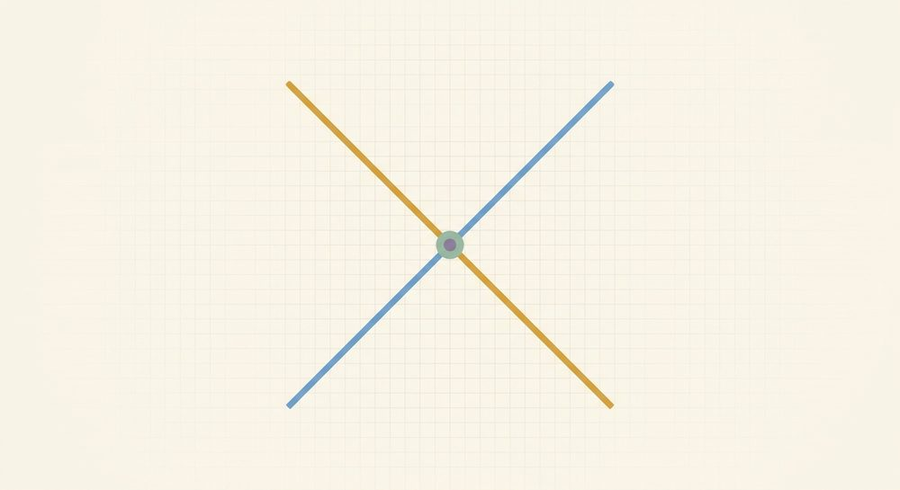

Systems of Equations
Fresh, parallel-form problems with full worked solutions — more reps for the skills in this unit, kept separate from the textbook's own problems.

Lesson 7.1: Solving by graphing
Solve the system by graphing (give the ordered pair where the two lines meet, and check both): y = x and y = 5.
Worked solutionTry it first, then open.
y = 5 is the flat (horizontal) line at height 5. y = x is the diagonal through the origin; it reaches height 5 exactly when x = 5. So the lines cross at (5, 5). Algebraically, setting the two right-hand sides equal: x = 5, then y = 5. Check in both: 5 = 5 and 5 = 5. Solution: (5, 5).
Answer: 5
Solve the system by graphing (give the ordered pair and check both): y = 2x and y = 8.
Worked solutionTry it first, then open.
y = 8 is the horizontal line at height 8. y = 2x climbs by 2 for each step right; it reaches height 8 when 2x = 8, i.e. x = 4. The lines cross at (4, 8). Make a tiny table to plot: y = 2x gives (0,0), (2,4), (4,8); y = 8 is flat at 8. They share the point (4, 8). Check: 8 = 2(4) and 8 = 8. Solution: (4, 8).
Answer: 4
Solve the system by graphing (give the ordered pair and check both): y = x + 3 and y = -x + 9.
Worked solutionTry it first, then open.
Plot from short tables. y = x + 3: (0,3), (3,6), (6,9). y = -x + 9: (0,9), (3,6), (6,3). The shared row is x = 3, where both give y = 6 — the lines cross at (3, 6). (Algebraically this is where x + 3 = -x + 9 ⇒ 2x = 6 ⇒ x = 3.) Check in both: 6 = 3 + 3 and 6 = -3 + 9. Solution: (3, 6).
Answer: 3
Solve the system by graphing (give the ordered pair and check both): y = 2x - 3 and y = x + 1.
Worked solutionTry it first, then open.
Tables: y = 2x - 3 gives (0,-3), (2,1), (4,5); y = x + 1 gives (0,1), (2,3), (4,5). The lines meet where the heights agree — at x = 4, both equal 5 — so the crossing is (4, 5). (Reading this off a hand graph works only because the crossing lands on integer grid lines; if it didn't, you'd switch to substitution or elimination, exactly the next two lessons.) Check: 5 = 2(4) - 3 and 5 = 4 + 1. Solution: (4, 5).
Answer: 4
Lesson 7.2: Substitution
Solve by substitution (give (x, y) and verify both): y = 4x and x + y = 10.
Worked solutionTry it first, then open.
y is already isolated, so pour 4x in for y in the second equation: x + 4x = 10 ⇒ 5x = 10 ⇒ x = 2. Back-substitute: y = 4(2) = 8. Solution (2, 8). Check: 8 = 4(2) and 2 + 8 = 10.
Answer: 2
Solve by substitution (give (x, y) and verify both): y = x + 5 and 2x + y = 14.
Worked solutionTry it first, then open.
y is isolated as x + 5. Substitute it into the second equation: 2x + (x + 5) = 14 ⇒ 3x + 5 = 14 ⇒ 3x = 9 ⇒ x = 3. Back-substitute: y = 3 + 5 = 8. Solution (3, 8). Check: 8 = 3 + 5 and 2(3) + 8 = 14.
Answer: 3
Solve by substitution (give (x, y) and verify both): x = 3y and x + y = 12.
Worked solutionTry it first, then open.
Here x is isolated, so substitute 3y for x in the second equation: 3y + y = 12 ⇒ 4y = 12 ⇒ y = 3. Back-substitute: x = 3(3) = 9. Solution (9, 3). Check: 9 = 3(3) and 9 + 3 = 12. (Note we solved for y first because x was the isolated one — finish by getting its partner.)
Answer: 3
Solve by substitution (give (x, y) and verify both): y = 2x - 3 and 3x + 2y = 15.
Worked solutionTry it first, then open.
y is isolated as 2x - 3. Substitute into the second equation and distribute carefully to everyone inside the parentheses: 3x + 2(2x - 3) = 15 ⇒ 3x + 4x - 6 = 15 ⇒ 7x - 6 = 15 ⇒ 7x = 21 ⇒ x = 3. Back-substitute: y = 2(3) - 3 = 3. Solution (3, 3). Check: 3 = 2(3) - 3 and 3(3) + 2(3) = 9 + 6 = 15. (The trap here is writing 2(2x - 3) as 4x - 3 — distribute to the -3 too.)
Answer: 3
Lesson 7.3: Elimination
Solve by elimination (give (x, y) and verify both): x + y = 9 and x - y = 3.
Worked solutionTry it first, then open.
The y-terms are +y and -y — opposite signs, so ADD the equations to send y to zero: (x + y) + (x - y) = 9 + 3 ⇒ 2x = 12 ⇒ x = 6. Back-substitute into x + y = 9: 6 + y = 9 ⇒ y = 3. Solution (6, 3). Check: 6 + 3 = 9 and 6 - 3 = 3.
Answer: 6
Solve by elimination (give (x, y) and verify both): 3x + y = 11 and x + y = 5.
Worked solutionTry it first, then open.
The y-terms match (both +y) — equal signs, so SUBTRACT to send y to zero. Subtract the second equation from the first, flipping every sign in what you subtract: (3x + y) - (x + y) = 11 - 5 ⇒ 2x = 6 ⇒ x = 3. Back-substitute into x + y = 5: 3 + y = 5 ⇒ y = 2. Solution (3, 2). Check: 3(3) + 2 = 11 and 3 + 2 = 5.
Answer: 3
Solve by elimination (give (x, y) and verify both): 4x + 3y = 18 and 2x - 3y = 0.
Worked solutionTry it first, then open.
The y-terms are +3y and -3y — opposite signs, so ADD to send y to zero: (4x + 3y) + (2x - 3y) = 18 + 0 ⇒ 6x = 18 ⇒ x = 3. Back-substitute into 2x - 3y = 0: 2(3) - 3y = 0 ⇒ 6 = 3y ⇒ y = 2. Solution (3, 2). Check: 4(3) + 3(2) = 12 + 6 = 18 and 2(3) - 3(2) = 6 - 6 = 0.
Answer: 3
Solve by elimination (give (x, y) and verify both): 2x + 3y = 20 and 3x + 2y = 20.
Worked solutionTry it first, then open.
No coefficients match yet, so SCALE both equations to line up the x-terms. Multiply the first by 3: 6x + 9y = 60. Multiply the second by 2: 6x + 4y = 40. Now the x-terms match (both 6x), so SUBTRACT: (6x + 9y) - (6x + 4y) = 60 - 40 ⇒ 5y = 20 ⇒ y = 4. Back-substitute into 2x + 3y = 20: 2x + 12 = 20 ⇒ 2x = 8 ⇒ x = 4. Solution (4, 4). Check: 2(4) + 3(4) = 8 + 12 = 20 and 3(4) + 2(4) = 12 + 8 = 20. (Remember to multiply EVERY term and BOTH sides when you scale.)
Answer: 4
Lesson 7.4: Special cases & applications
Classify this system as one solution, no solution, or infinitely many. If one, give it: y = 4x - 1 and y = 4x + 3.
Worked solutionTry it first, then open.
Both lines have slope 4 but different y-intercepts (-1 and 3), so they are parallel and never meet. Confirm with the algebra: substitute to get 4x - 1 = 4x + 3; subtract 4x from both sides ⇒ -1 = 3, which is FALSE. A false leftover means nothing can satisfy both. NO SOLUTION.
Answer: No solution (parallel lines)
Classify this system as one solution, no solution, or infinitely many. If one, give it: x + y = 6 and 2x + 2y = 12.
Worked solutionTry it first, then open.
The second equation is exactly the first multiplied by 2, so they are the SAME line. Algebraically, scale the first by 2 to get 2x + 2y = 12, then subtract the second: 0 = 0, which is always TRUE. A true leftover means every point on the line works. INFINITELY MANY SOLUTIONS — precisely all (x, y) with x + y = 6, e.g. (0, 6), (2, 4), (6, 0).
Answer: Infinitely many solutions (same line); all (x, y) with x + y = 6
A school play sells adult tickets at $9 and student tickets at $6. One night it sold 150 tickets for $1140 total. How many adult and how many student tickets were sold? (Set up two equations, solve, and check the story.)
Worked solutionTry it first, then open.
Let a = adult tickets and c = student tickets. One equation counts TICKETS, the other counts DOLLARS: a + c = 150 and 9a + 6c = 1140. Substitute c = 150 - a into the money equation: 9a + 6(150 - a) = 1140 ⇒ 9a + 900 - 6a = 1140 ⇒ 3a + 900 = 1140 ⇒ 3a = 240 ⇒ a = 80. Then c = 150 - 80 = 70. Check the story: 80 + 70 = 150 tickets and 9(80) + 6(70) = 720 + 420 = 1140 dollars. 80 adult tickets and 70 student tickets.
Answer: 80
A jar holds 20 coins, all quarters and dimes, worth $3.80 (380 cents). How many quarters and how many dimes? (Set up two equations, solve, and check the story.)
Worked solutionTry it first, then open.
Let q = quarters and d = dimes. One equation counts COINS, the other counts CENTS: q + d = 20 and 25q + 10d = 380. Use elimination: scale the count equation by 10 ⇒ 10q + 10d = 200, then subtract it from the value equation ⇒ (25q + 10d) - (10q + 10d) = 380 - 200 ⇒ 15q = 180 ⇒ q = 12. Then d = 20 - 12 = 8. Check the story: 12 + 8 = 20 coins and 25(12) + 10(8) = 300 + 80 = 380 cents. 12 quarters and 8 dimes.
Answer: 12
Mixed review
Problems that mix skills from across the unit — good for spacing earlier work back in.
Solve by graphing (give the ordered pair and check both): y = x - 2 and y = -x + 6.
Worked solutionTry it first, then open.
Tables: y = x - 2 gives (0,-2), (2,0), (4,2); y = -x + 6 gives (0,6), (2,4), (4,2). The lines meet where the heights agree — at x = 4, both equal 2 — so the crossing is (4, 2). (Setting x - 2 = -x + 6 gives 2x = 8 ⇒ x = 4.) Check: 2 = 4 - 2 and 2 = -4 + 6. Solution: (4, 2).
Answer: 4
Solve by the method that fits best (and say why), then verify both: y = 2x and 3x + y = 20.
Worked solutionTry it first, then open.
Because y is already isolated, SUBSTITUTION is the clean choice — pour 2x straight in. 3x + 2x = 20 ⇒ 5x = 20 ⇒ x = 4. Back-substitute: y = 2(4) = 8. Solution (4, 8). Check: 8 = 2(4) and 3(4) + 8 = 12 + 8 = 20.
Answer: 4
Solve by the method that fits best (and say why), then verify both: 2x + 3y = 21 and x + y = 9.
Worked solutionTry it first, then open.
These are in standard form, so ELIMINATION fits: scale x + y = 9 by 3 ⇒ 3x + 3y = 27, then subtract from the first to clear y ⇒ (2x + 3y) - (3x + 3y) = 21 - 27 ⇒ -x = -6 ⇒ x = 6. (Equivalently, isolate y = 9 - x and substitute: 2x + 3(9 - x) = 21 ⇒ 2x + 27 - 3x = 21 ⇒ -x = -6 ⇒ x = 6.) Then y = 9 - 6 = 3. Solution (6, 3). Check: 2(6) + 3(3) = 12 + 9 = 21 and 6 + 3 = 9.
Answer: 6
Classify this system as one solution, no solution, or infinitely many. If one, give it: 3x - y = 2 and 6x - 2y = 4.
Worked solutionTry it first, then open.
Divide the second equation by 2: 3x - y = 2 — identical to the first, so they are the SAME line. Algebraically, scale the first by 2 ⇒ 6x - 2y = 4, then subtract the second ⇒ 0 = 0, always TRUE. A true leftover means every point works. INFINITELY MANY SOLUTIONS — all (x, y) with 3x - y = 2, e.g. (0, -2), (1, 1), (2, 4).
Answer: Infinitely many solutions (same line); all (x, y) with 3x - y = 2
A rectangle's length is 3 more than its width, and its perimeter is 30. Find the width and length. (Set up two equations, solve, and check the story.)
Worked solutionTry it first, then open.
Let l = length and w = width. The two facts give l = w + 3 and 2l + 2w = 30. Length is already isolated, so SUBSTITUTE: 2(w + 3) + 2w = 30 ⇒ 2w + 6 + 2w = 30 ⇒ 4w + 6 = 30 ⇒ 4w = 24 ⇒ w = 6. Then l = 6 + 3 = 9. Check the story: length 9 is 3 more than width 6, and perimeter 2(9) + 2(6) = 18 + 12 = 30. Width 6, length 9.
Answer: 6